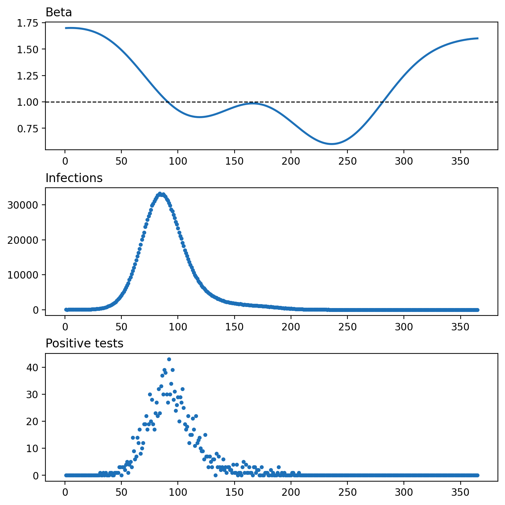
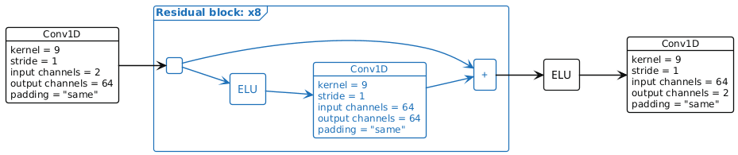
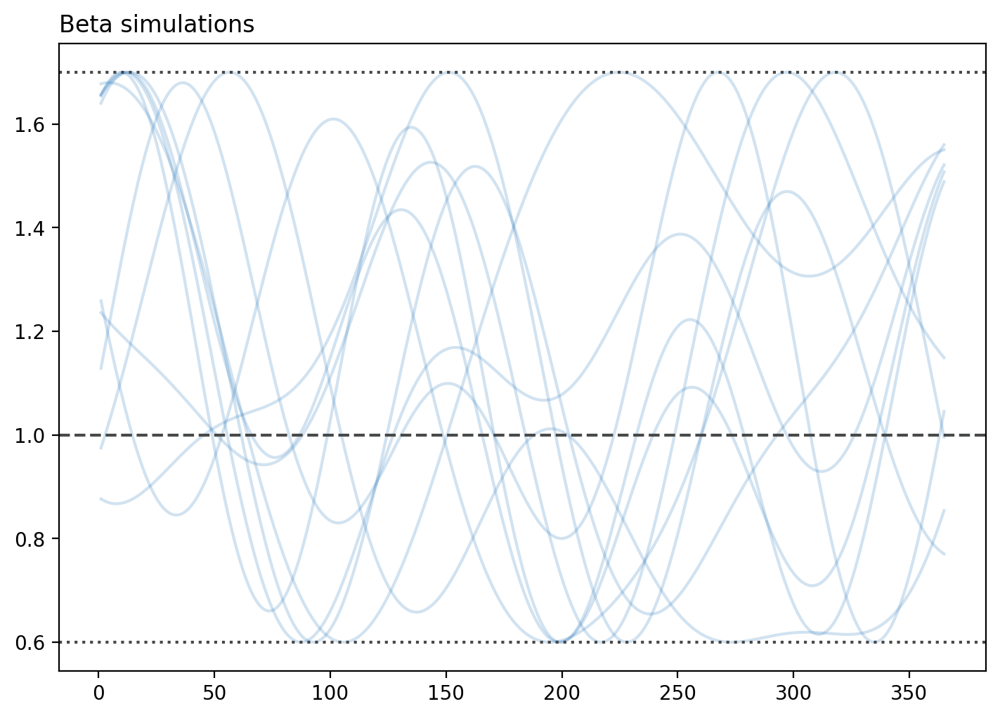
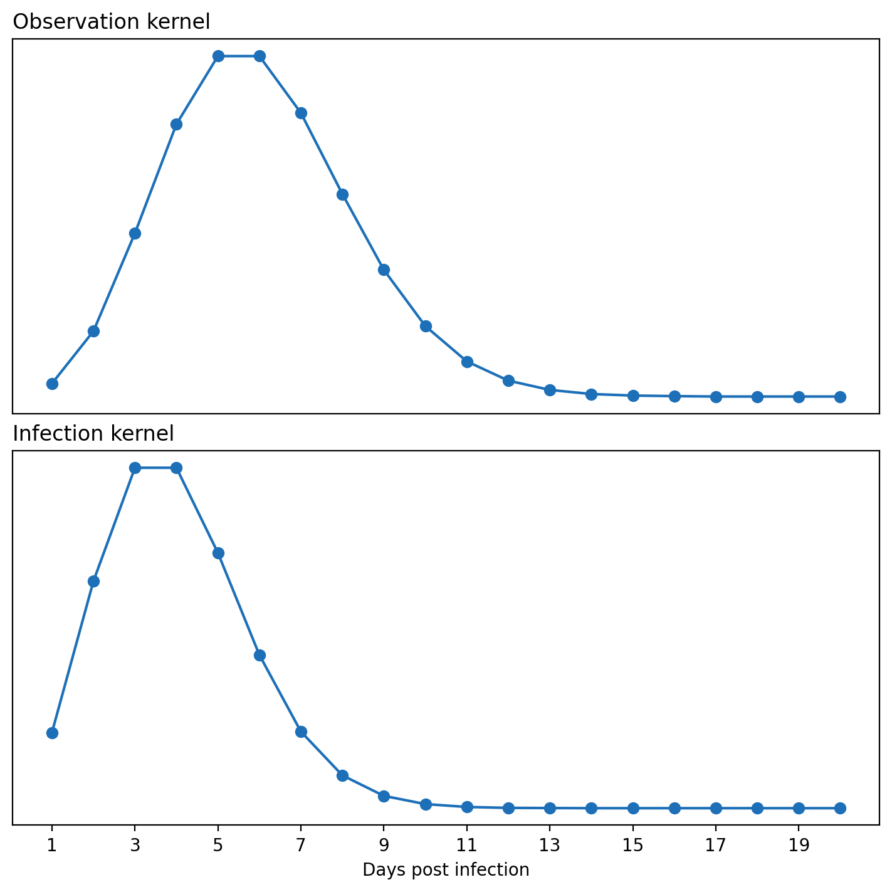
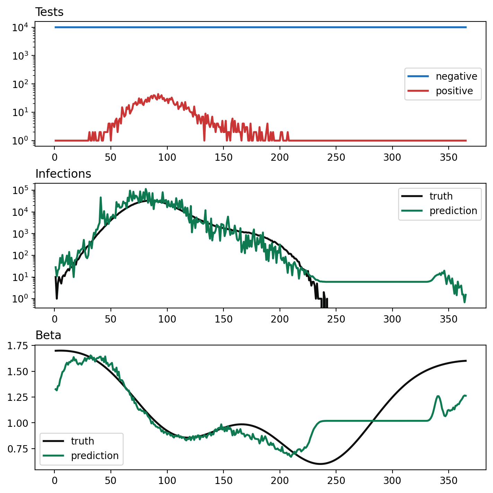

AANN 27/05/2026
Table of Contents
ERRIC the estimator: part 1
Overview
Infectious disease epidemiology often involves estimating the state and parameters of some hidden latent process using some noisy observations collected through time. Estimating latent processes with MCMC is non-trivial, and can be downright painful if the process you are modelling is complex. This post grew out of the idea that we can use neural estimators to solve this estimation problem, and that one-dimensional convolutional neural networks (Conv1Ds) are a suitable architecture for this problem.
I plan to build up this estimator over a couple more posts. Here we are just going to get our bearings with how to use a Conv1D for this task. I'll defer uncertainty quantification and parametric uncertainty for subsequent posts1. Since every network needs a name, let's call this one ERRIC for Estimating Renewal with ResIdual Convolutional networks. Yes, it's a bit of a stretch…
Background
Before we get into ERRIC, we need to understand the task we are trying to solve first.
Renewal models and active surveillance
Renewal models are a convenient structure for describing an epidemic time series. In this model, the number of infections \(I_t\) on day \(t\) has the following distribution:
\[ I_t\sim\text{Pois}\left(\beta_{t}\sum_{i=1}^{M}\lambda_{i}I_{t-i}\right) \]
where \(\mathbf{\lambda}=(\lambda_1,\ldots,\lambda_M)\) is the generation interval distribution, and \(\beta_{t}\) is a common time varying parameter describing the average number of new infections per individual.
If we assume that this epidemic is occurring in a population of \(N_\text{pop}\) people and on each day a random sample of \(N_{\text{test}}\) people are tested for infection (which is not wildly dissimilar for the ONS-CIS) then the daily number of positive tests \(Y_t\) has the following distribution:
\[ Y_t\sim\text{Binom}\left(N_{\text{test}},\frac{\sum_{i=1}^{M}v_{i}I_{t-i}}{N_{\text{pop}}}\right) \]
where \(v_{i}\) is the probability of testing positive for infection \(i\) days after you were infected (assuming there are no false-positives).
Figure 1 shows an example of what this process might look like. The top panel has the \(\beta_t\), which is a random sum of trigonometric functions (see below for details); the middle panel shows the \(I_t\), the daily number of infections; and the bottom panel shows \(Y_t\), the daily number of positive tests when 10,000 tests are distributed in a population of 10,000,000 each day across an epidemic of 365 days.

Figure 1: Epidemic time series generated with a renewal model. Top panel shows the values of beta across 365 days, the dashed line at one indicates the critical threshold for epidemics. The middle panel shows the daily number of infections. This looks smooth because they are drawn from a Poisson distribution with a large mean. Note that by day 250 there are no further infections. The bottom panel shows daily number of positive tests assuming the tests are distributed to members of the population at random.
We are interested in estimating \(I_t\) and \(\beta_t\) given \(Y_t\). For now we will assume that both \(\lambda\) and \(v\) are known; relaxing this assumption is accounting for parametric uncertainty.
ERRIC, a one-dimensional CNN with residual connections
We are attempting to regress one time series onto another. Figure 2 shows the architecture of ERRIC, a convolutional neural network (CNN) that maps our two input channels: the daily number of positive and \(Y_t\) negative tests \(N_{\text{test}}-Y_t\)2, to our two output channels: the predictions of \(\beta_t\) and \(I_t\). Because this is a CNN, it can be applied to time series of arbitrary length. If you want to learn about CNNs, there is a nice chapter on them in Bishop & Bishop (2024).

Figure 2: Example of a residual CNN with eight Conv1D residual blocks. (If you like this figure, you might like this post.) This is a pre-activation residual network. The initial Conv1D is needed as the number of input channels may differ from the number of internal channels.
Example
I have written about neural estimators previously: for example here, here and here. Basically, the idea is to use a computational model to sample pairs consisting of the unobserved variables you want to estimate and the data you observe and then train a neural network to predict the variables you want to estimate based on the data you have observed.
Simulating data
We simulated 1,000 epidemics for training with a further 250 for each for validation and testing of the model. While simulating, we conditioned the samples on having less than 90% of the total population infected across the 365 days, and there being at least 50 infections observed by the surveillance system. Simulating this data took approximately a minute using a crude implementation in R.
The values of \(\beta_t\) are random functions,
\[ \beta_{t}=f_{a,b}\left(b - a\frac{t}{365} + \sum_{i=1}^{3}Z_{i,1}\sin\left(\frac{2\pi t}{365}\right)+Z_{i,2}\cos\left(\frac{2\pi t}{365}\right)\right) \]
where the \(Z_{i,j}\sim\text{N}(0,1)\) and \(f_{a,b}\) scales a function onto \([a,b]\):
\[ f_{a,b}(x)=(b-a)\frac{x-\min(x)}{\max(x)-\min(x)} + a \]
Figure 3 shows a random sample of these \(\beta_{t}\) functions. Because there can be multiple peaks in \(\beta_t\), the simulated epidemics often display waves of infection.

Figure 3: The \(\beta_t\) are smooth functions generated as random sums of trigonometric functions.
Figure 4 shows the kernels used to describe how infectiousness and test positivity changes across the course of an individuals infection. The values are obtained by evaluating a Poisson distribuion on the range 0 to 19. These parameters are fixed across all the simulations, accounting for uncertainty in these parameters is a task for future iterations of ERRIC.

Figure 4: The \(\lambda\) and \(v\) kernels used in the infection and observation models. These values come from Poisson distributions with means 3 and 5 truncated to the support of 0 to 19 (which is used to model the first 20 days post infection.)
Training ERRIC
The count variables in the simulations take a very wide range of
values. Both the number of infections and positive tests range across
several orders of magnitude and are heavily zero inflated. The
negative tests are typically very close to maximum value (the total
number of daily tests). To put these values on a range that is more
numerically convenient we first take a log1p transformation3 of
these values and then center them and scale by their range. Of course,
this transformation is done first on the training data, then the
statistics are saved to apply them to the validation and testing data.
For the values of \(\beta_t\), we standardize them by the mean and
standard deviation.
Bear in mind that for now we are only interested in point estimates (we will address UQ in future posts.) Since all the prediction targets have been preprocessed to some extent, we are going to use the average mean-squared-error as the loss function.
We used the AdamW optimizer (weight decay of \(0.004\)) with batches of size 64. We used an exponential learning rate schedule with a warm-up period. The learning rate was \(10^{-3}\) for the first 20 epochs before exponentially decreasing (at a rate \(0.998\)) for a further 80 epochs. The optimization problem is small enough that it can run on the CPU in under and hour.
Predictions
Figure 5 shows some of the predicted point estimates from ERRIC for the same test-set simulation shown in Figure 1. We note that in the period where there are a substantial number of positive tests (approx. days 25–225) there are sensible looking estimates generated. By around day 250 there is no more signal, so ERRIC defaults to returning the mean of the training data. It is important to note that these estimates are generated very quickly, (loading TensorFlow is takes more time) as is typical of amortized inference.

Figure 5: Predictions of daily infections and infection parameters. The top panel shows the daily number of tests that were negative or positive for infection. Note that the vast majority of the tests come back negative because the tests were distributed randomly through the population. The middle panel shows the predicted estimate of the daily number of infections \(I_t\) along with the true value. The bottom panel shows the predicted estimates of the daily values of \(\beta_t\) and the true values used in the simulation. Note that after day 250 there are no further infections detected and the predictions effectively predict the mean value under the prior distribution.
Discussion
In this post we have looked at an example of how a CNN can be used to map a sequence of observations of positive and negative test results to point estimates of the underlying daily number of infections. We call the model ERRIC for Estimating Renewal with ResIdual Convolutional networks.
This was a very simple attempt at building an estimator and in future posts we will add uncertainty quantification, variable parameters of the simulation and various additional features to the simulation.
Thanks
Thank you for reading this post. Please get in touch if you have any feedback :)
Postscript
While working on this, I build a very small streamlit app to display training metrics and visualizations of data and predictions. I've seen people use TensorBoard before and thought it looked quite slick, but I wanted something that was able to help me explore more than training experiments. With only a small amount of code I was able to assemble a range of visualizations which were helpful across iterations of the model building process. The pattern of building small visualizations and then including them in a small app which will update everytime you change something in the pipeline gave me a much better feel for my data. This is a pattern that I suspect I will start using regularly.
Footnotes:
Yes, it seems redundant to include positive tests here, but in practice there are likely to be far more than just positive and negative tests, so it makes sense to include structure for this from the beginning.
Recall that log1p is the function \(f(x)=\log(x+1)\) which is useful for skewed non-negative variables.